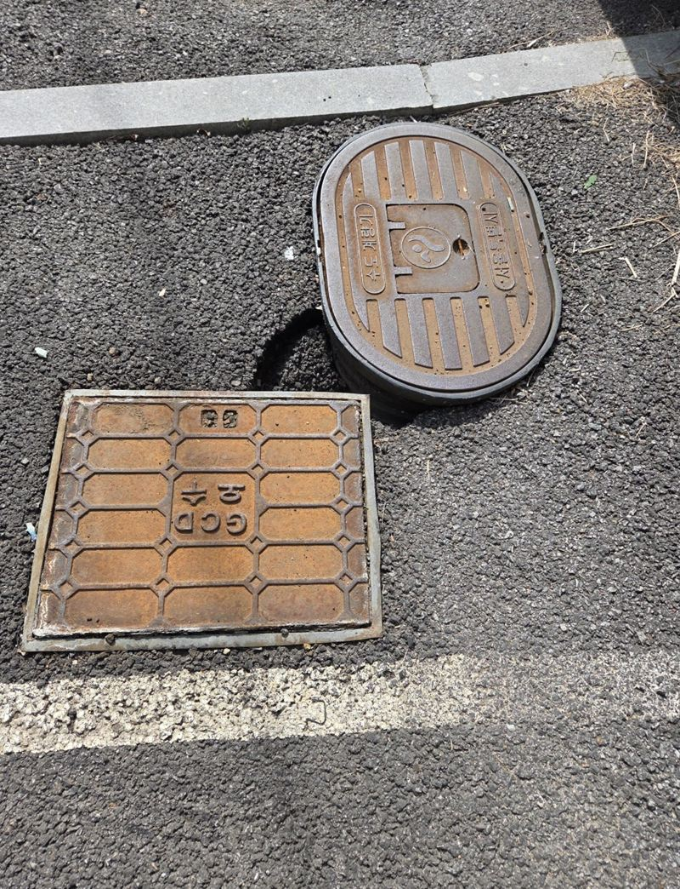
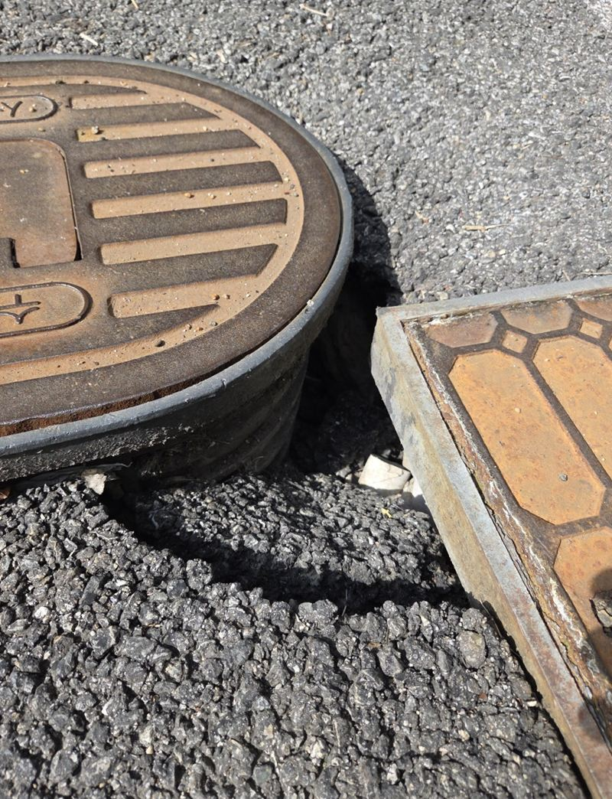
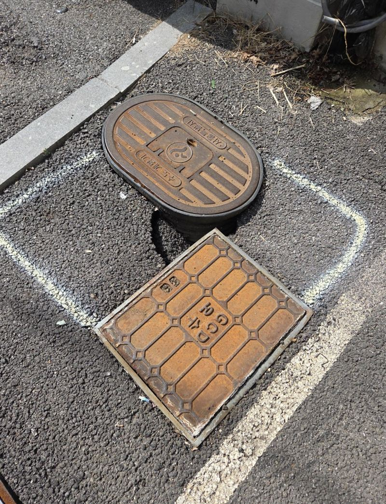
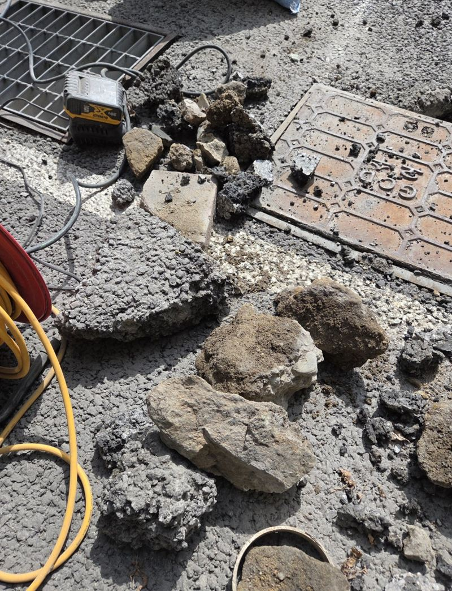
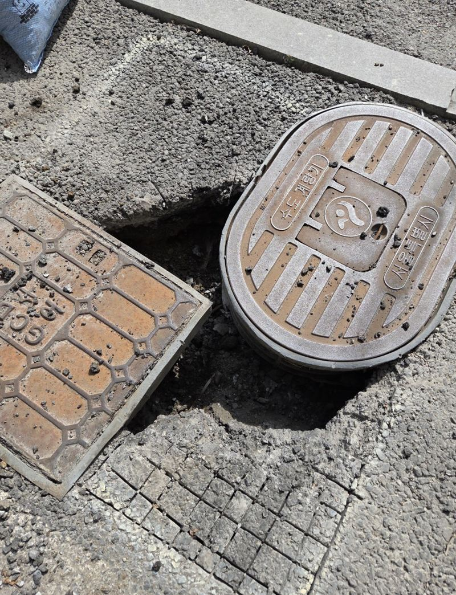
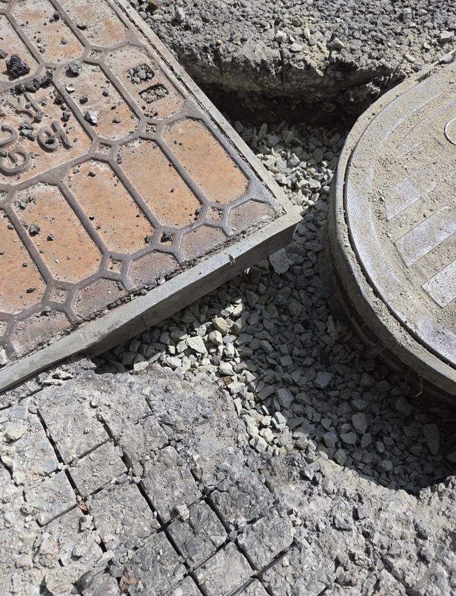
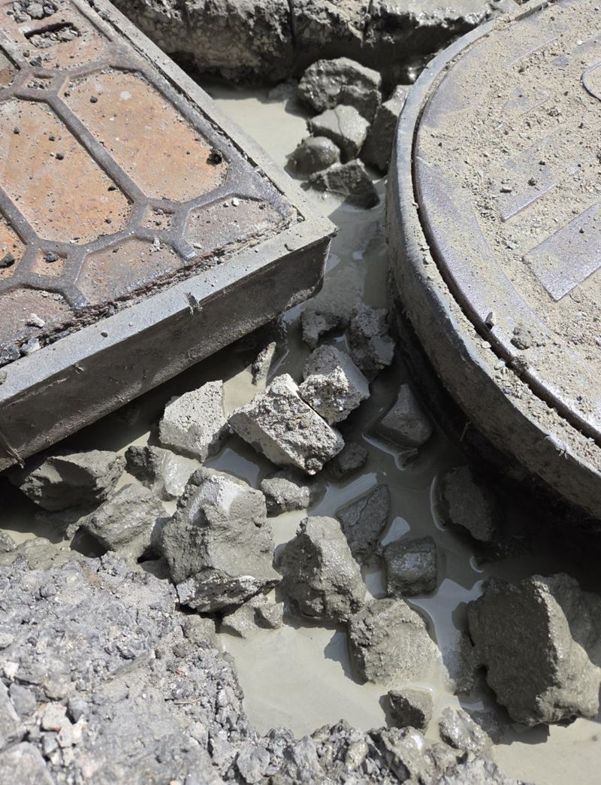
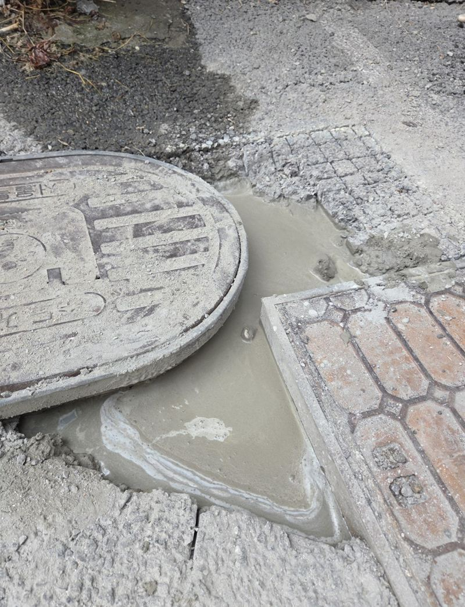
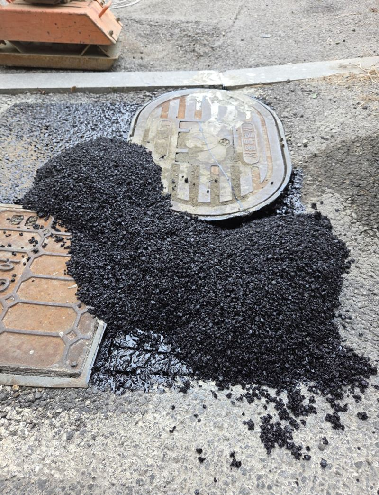

은평 주차장 땅꺼짐 구멍 시멘트·아스콘 보수

 보수 전보수 후
보수 전보수 후← 밀어서 전후 비교 →
처음엔 손바닥만 하던 하수구 옆 꺼짐이 몇 달 사이 바퀴가 빠질 만큼 커졌다는 연락이었어요. 빌라 주차장이라 매일 차가 그 위를 지나가는 자리였어요. 주차장 전체를 다시 포장하지 않고, 꺼진 구간만 속까지 채워 차가 다닐 수 있게 되돌렸어요.
하수구 옆이 유독 잘 꺼지는 이유
하수구 둘레는 물이 계속 지나가는 곳이라, 배관 틈으로 흙이 조금씩 쓸려 나가요. 그러면 아스콘 아래에 빈 공간이 생기고, 그 위로 차가 반복해서 지나가면서 표면이 주저앉아요. 겉으로 보이는 구멍보다 속이 훨씬 넓게 비어 있는 경우가 흔해요.


겉만 덮으면 몇 달 뒤 다시 내려앉아요
다른 현장에서 표면만 시멘트로 메운 자리를 자주 봐요. 처음엔 평평해 보여도 속이 빈 채라 금방 다시 꺼져요. 그래서 이번에는 눈에 보이는 구멍보다 조금 넓게 아스콘을 걷어 냈어요. 실제로 걷어 보니 한쪽은 예상보다 깊게 내려가 있어서 보강 범위를 넓혔어요.

채우고, 묶고, 덮는 세 단계
-
잡석으로 빈 곳 채우기
준비해 간 잡석을 층층이 넣어 빈 공간을 메우고, 차 무게가 한 점에 몰리지 않게 받침층을 만들었어요.


-
시멘트로 틈 묶기
잡석 사이사이에 시멘트를 부어 따로 놀지 않게 하나로 굳혔어요. 이 층이 약하면 나중에 다시 움직여요.

-
아스콘 마감과 다짐
맨 위는 주변 바닥과 같은 아스콘으로 덮고 단단히 다져서 높이를 맞췄어요. 맨홀 뚜껑 둘레도 턱이 지지 않게 정리했어요.


부분 보수 비용을 정하는 것
- 꺼진 깊이와 넓이걷어 보고 속이 더 넓으면 채울 자재가 늘어요.
- 마감 재료아스콘으로 덮을지, 콘크리트로 덮을지에 따라 달라요.
- 차량 통제 시간굳는 동안 주차를 막아야 하는 시간도 함께 정해요.
이런 바닥이면 미루지 마세요
- 맨홀 뚜껑 둘레가 갈라져요테두리가 깨지기 시작하면 차 무게에 금방 넓어져요. 작을 때 막는 게 범위도 적어요.
- 비 온 뒤 물웅덩이가 같은 자리에 생겨요바닥이 조금씩 내려앉고 있다는 뜻일 수 있어요. 웅덩이 사진을 보내 주세요.
- 차가 지나갈 때 덜컹 소리가 나요표면 아래가 비었거나 턱이 생긴 경우예요. 바퀴가 빠지기 전에 손보는 게 안전해요.
- 빌라 관리인이 따로 없어요개인 건물주나 세대 대표분이 직접 맡기시는 경우도 많아요. 연락 주시면 범위부터 같이 봐요.
주차장 땅꺼짐, 이것도 궁금하시죠
하수관이 깨진 거라면 같이 고쳐야 하나요?
배관이 깨져 흙이 계속 빠지는 경우라면 배관부터 손봐야 다시 꺼지지 않아요. 걷어 냈을 때 상태를 보고 말씀드려요.
보수 후 바로 차를 대도 되나요?
마감 재료와 날씨에 따라 기다려야 하는 시간이 달라서, 작업이 끝날 때 함께 안내해요.
작은 구멍인데도 걷어 내야 하나요?
속이 비어 있는지 확인하려면 어느 정도는 걷어 봐야 해요. 겉만 덮으면 같은 자리가 반복해서 꺼질 수 있어요.
아스콘과 콘크리트 중 뭘로 덮나요?
주변 바닥 재질에 맞추는 게 기본이에요. 아스팔트 주차장이면 아스콘으로 덮어야 이음이 덜 티 나요.
보수 범위는 어떻게 정하나요?
꺼진 곳 둘레를 조금 넓게 걷어 보고 속이 빈 범위까지 잡아요. 그래서 처음 보이던 구멍보다 커질 수 있어요.
다른 바닥 보수 현장
- 천안 매립 콘크리트 패드 설치 방법
- 용인 기흥 시멘트 패드 소형 거푸집 설치 방법
- 군포 도로 갈라짐·처짐 복구 공사 방법
- 인천 미추홀 내려앉은 보도블럭 재시공 견적
- 서초 아스팔트 콘크리트 꺼짐 보수 공사 방법
- 양평 보도블럭 교체 공사 방법과 순서
- 인천 연수구 콘크리트 시멘트 메꿈 작업 비용
- 용산 콘크리트 내외벽 균열 방수 페인트 시공 방법
- 강서 지하주차장 콘크리트 벽면·천장 복원 방법 · 블로그
- 김포 주차장 맨홀 주변 땅꺼짐 몰탈 보수 방법 · 블로그
- 김포 소형 싱크홀 아스콘 부분 보수 방법 · 블로그
- 군포 주차장 바닥 주차선 도색 비용과 순서 · 블로그
꺼진 자리 사진에 발이나 줄자를 함께 찍어 크기를 보여 주세요.
전화 상담 010-4517-9872